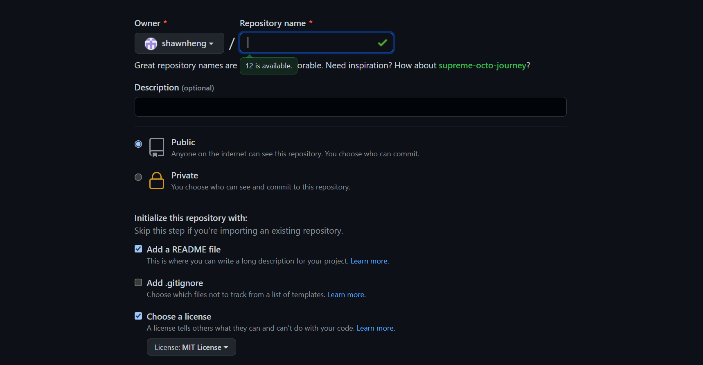
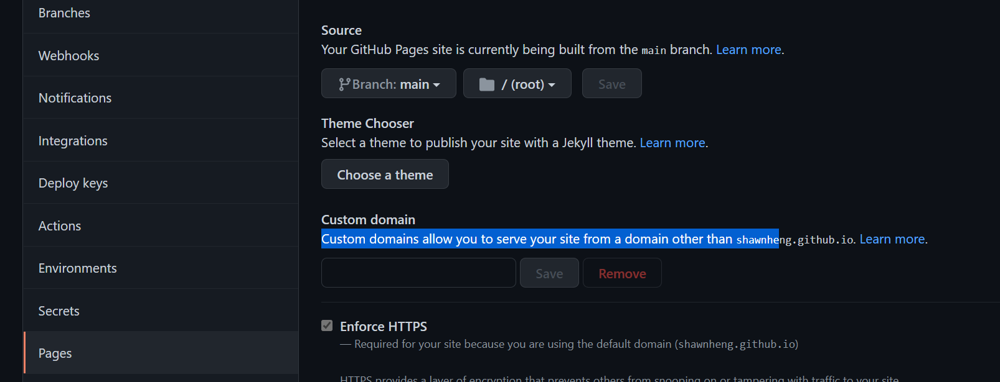
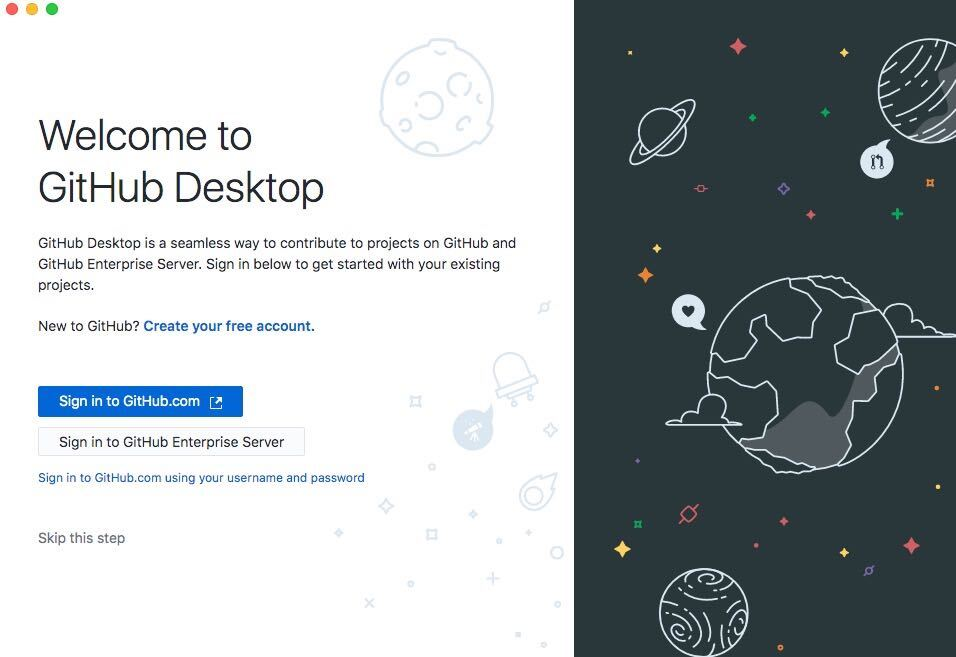
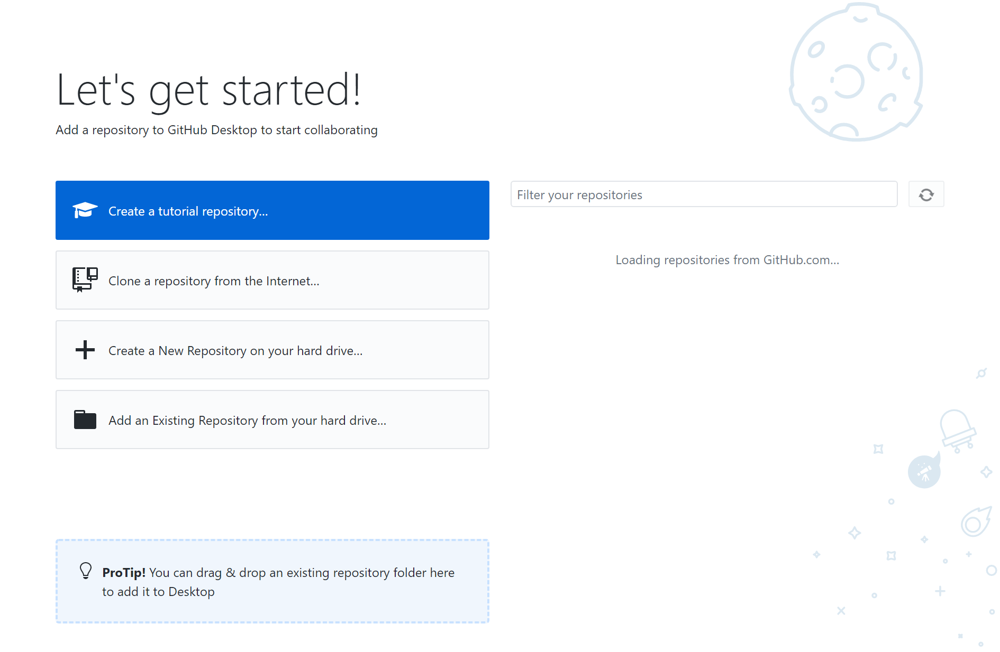

Github
On this page, I will be teching you on how to use git to maintain your site.
First off, you have to create a account on github.One good thing about github, is that you can sharing any contents in there as long it is publish as public.
Once you created a account, you will arrive at this menu page of github.What we want to do is, we want to create new repositories project so that we can store our project files in it.
After clicking on the new repositories, they will bring you in this page where you have to give a name for your repository.Then select public , select add a readmefile and license we want to select MIT license.Once done, select create repository.
-

After creating a repository project, they will bring you to this page. This page here is where we store our projects file and this will display to the public but before that we have to do some changes in the setting.

Inside the settings, we want to scroll down until you see pages and click on it. Under source, use the None or Branch drop-down menu and select a publishing source.
Optionally, use the drop-down menu to select a folder for your publishing source.click save on it
-

Once everything is all ready, install github desktop
After finishing installing your github desktop, your screen should look like this.
-

Click on sign in to github.com, enter in your username and password for your github account.
This page here, there are several things we can do.Like cloning your repository, creating new repository and adding existing repository into your hard drive
We going to choose add existing repositories into our hard drive as we have create one in github so that we can constantly maintain our site when we make any changes to it
I am going to select documents and place my file there so that it will be easy to locate.
-

Once finishing choosing your file location, the page should look like this.
This page is where we update your site files and push content over to github.From there, it will update your site if you have make any changes to your html file
How to constantly update or add in your html file and push the content over to github to update your site.
Copy your edited html files and paste to your file location for your existing repository.For my case, it would be at the documents.
If you already have your html file inside and paste your update one. It will look like this but if you don't html file inside your repositories it's fine. Just paste it inside as it will add inside to your github desktop
This is how it looks like if you add in a new file or update your file inside it
It will also show you what are changes you make to your code if you are updating it
Once you are satfisy with it, you have to add in a name for your summary at the left hand corner.So that,it can publish on your main.
After clicking on commit to main, we have to push our local file to github so that your site can be updated
This is how my old website look like before pushing local file to github
This is what it looks like when file is being pushed over and updates the site.